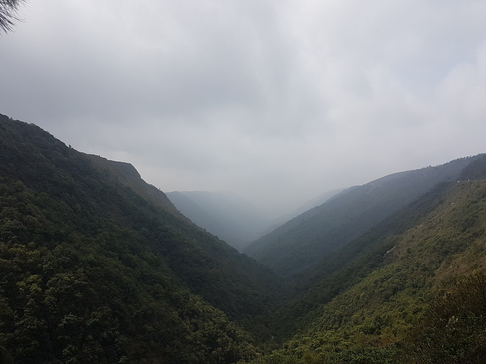
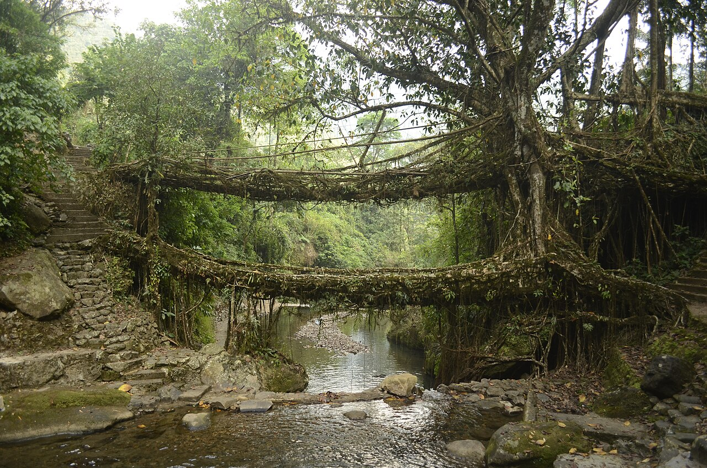
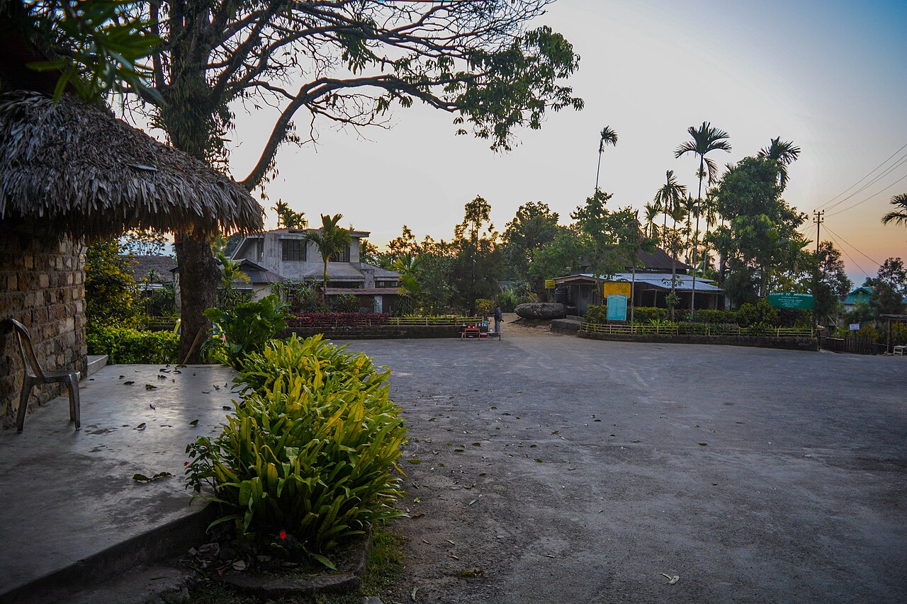
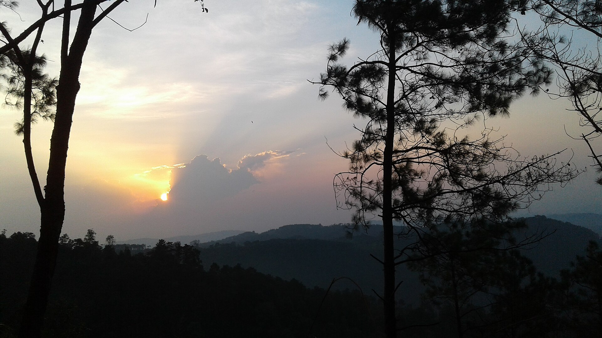

Local first
We hire locally, stay locally and eat locally, so more of your money stays in the hills.

About R&Z
A Shillong-based team who know the hills, the weather and the hidden trails — and love sharing them, one private journey at a time.
Our story
R&Z began the way most good things in Shillong do — over cups of tea and an argument about the best road to Sohra. Friends kept asking us to plan their Meghalaya trips: where to stay, when to leave, which waterfalls were worth the walk. In 2014 we turned those favours into a small travel company with one car and a notebook full of village contacts.
More than a decade later we are still small on purpose. Our planners, drivers and guides are from these hills. We know the morning fog that lifts off Laitlum by nine, the stretch of road that floods after a Sohra downpour, and the family in Nongriat who will have tea ready when you finish the steps.
That knowledge is what we sell — not just routes and rooms, but the confidence that someone who truly knows Meghalaya is looking after every hour of your trip.


Mission & values
“To share Meghalaya honestly and gently — so that every traveller leaves moved, and every village we visit is glad they came.”
We hire locally, stay locally and eat locally, so more of your money stays in the hills.
Fewer stops, more time. We plan around light and weather, not a checklist.
Sacred forests, villages and rivers are homes first. We travel quietly and leave no trace.
If a trek is too tough or a season too wet for what you want, we’ll tell you — and suggest something better.
Milestones
R&Z begins in Shillong with a single hired SUV, a notebook of village contacts and a promise to show guests the hills the way locals see them.
We start guiding overnight treks to Nongriat with guides from Tyrna — still the heart of our Living Root Bridges Trek.
Partnerships with family-run homestays in Mawlynnong, Sohra and Nongriat put more of every booking into village hands.
During the lockdown months we write our responsible-travel pledge: plastic-free trips, fair wages and respect for sacred places.
Our signature seven-day Meghalaya Grand Tour launches, built from a decade of learning the roads and the weather.
Families, honeymooners, trekkers and solo explorers from across India and the world — and many who have come back twice.
The people
Small by choice, local by birth — the faces behind your journey.
Born in Shillong and raised on weekend drives to Sohra, Rahul plans every itinerary as if it were for family.
Zarin keeps cars, stays and guides running like clockwork — even when the monsoon has other plans.
Bansan has walked the Tyrna steps more times than he can count and knows every root bridge by name.
Iba is the voice on WhatsApp at 11 pm, making sure your trip feels personal from first hello to drop-off.

Travel with locals
Share your dates and we’ll send a personalised plan — no obligation, no hard sell.